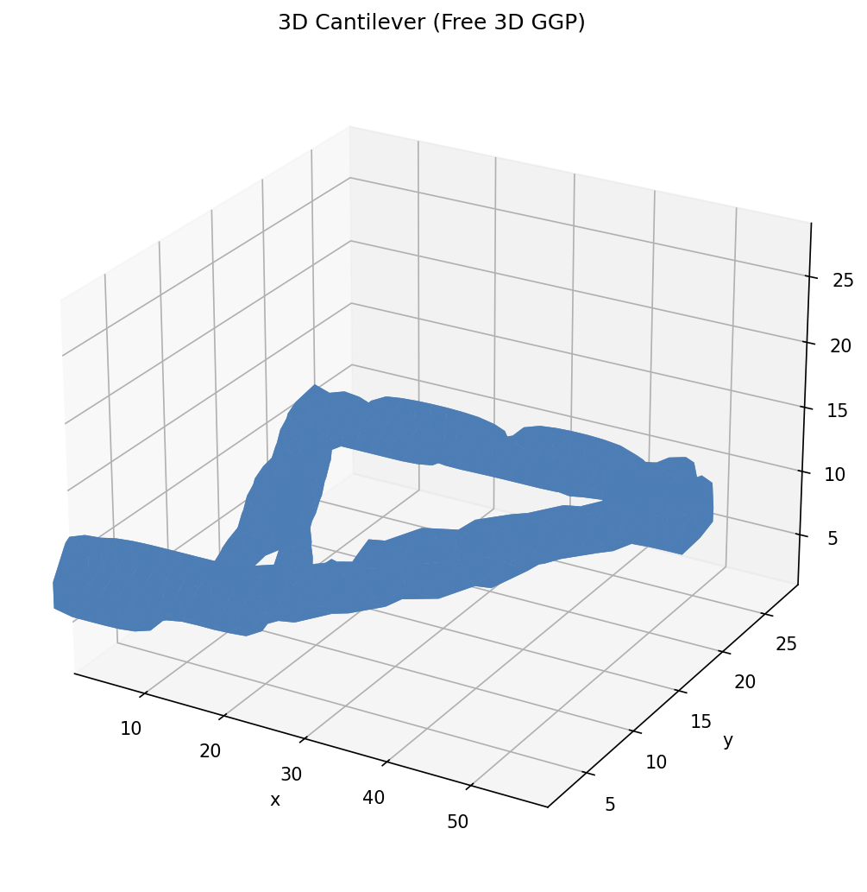

3D Cantilever
A full 3D topology optimisation of a short cantilever beam (60 × 30 × 30) using the Free 3D GGP formulation. Each component is parameterised by eight variables (centre position, length, width, two orientation angles, and a density parameter), allowing arbitrary 3D orientations.
Running
ggp optimize --preset 3d_cantilever
To save the density image:
ggp optimize --preset 3d_cantilever --output-dir docs/_static
For large 3D problems an iterative (PCG + GAMG) FEM solver saves memory:
ggp optimize --preset 3d_cantilever --iterative
Result
The image below shows an isosurface rendering of the optimised 3D density field (isosurface at ρ = 0.3, viewed from a south-east elevated perspective).
{kind=link}

3D isosurface of the optimised density field after 150 MMA iterations (2 % volume fraction — consistent with 3D bar cross-sections).
Problem details
Parameter |
Value |
|---|---|
Domain |
60 × 30 × 30 |
Mesh |
30×15×15 tets |
Formulation |
Free 3D |
Components |
20 |
Volume fraction |
0.02 |
Algorithm |
MMA |
Max iterations |
150 |